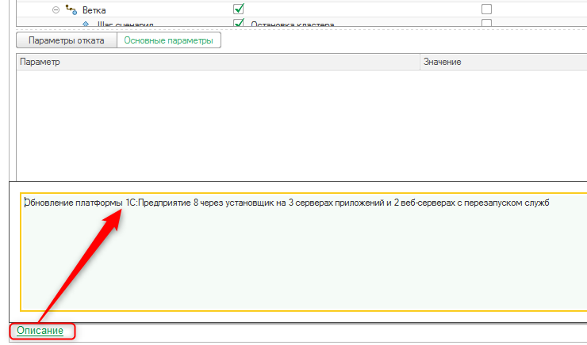

Сценарии автоматизации конструируются из команд. Сценарии фактически являются шаблонами для периодического запуска.
Сами задачи администрирования, выполняющие действия над системой, создаются на основании данных сценариев-шаблонов и называются «Экземпляры сценариев» (будут описаны ниже).
Сценарий имеет структуру дерева, формируемого из элементов фиксированного набора типов:
· Старт – начальный элемент любого сценария;
· Параллельное выполнение – группировочный элемент, обозначающий начало параллельных ветвей сценария;
· Ветка – начало последовательности шагов одной из ветвей параллельной части сценария;
· Шаг сценария – собственно элемент, ссылающийся на команду автоматизации, которую необходимо выполнить для изменения состояния системы.
· Вспомогательные шаги – группировочный элемент, объединяет Шаги и группировочные элементы Параллельное выполнение, которые не влияют на успешность сценария (удаление дистрибутивов с машины после окончания обновления, запуск обработок контроля отложенных обработчиков обновления и т.п.).
1. Конструирование сценария
Наиболее распространенные сценарии администрирования поставляются в готовом виде в составе продукта "1С:Центр администрирования". Но у пользователя есть возможность конструировать собственные сценарии из существующих (поставляемых), а также добавленных самостоятельно Команд.
Новый сценарий добавляется в тот же справочник Сценарии автоматизации. Дерево сценария формируется из этапов/шагов.
Для выполнения команд используются шаги типа «Шаг сценария», шаги иных типов служат для формирования логики сценария (начало, ветвление и т.д.).
После добавления шага с типом «Шаг сценария» необходимо выбрать выполняемую им команду, а также, при необходимости, команду отката.
Для сценария может быть заполнено Описание, которое позволяет более полно обозначить назначение и специфику сценария.

2. Заполнение параметров
Правила заполнения параметров шагов могут быть заданы на уровне сценария (можно переопределить на уровне Экземпляра). Можно задавать абсолютные значения, а также относительные ссылки на шаблоны параметров.
Шаблоны используются для задания параметров, используемых более, чем в одном шаге сценария. Для таких параметров достаточно вместо значения выбрать соответствующий ему шаблон.
Шаблоны могут быть трех видов:
· Строка – способ заполнения «Ручной ввод». Используются для заполнения параметров, произвольным строковым значением
· Ссылка на реквизит метаданных – способ заполнения «Из объекта метаданных». Ссылка на реквизит объекта метаданных выбирается из списка метаданных заполнено в вышестоящей таблице
- Конфиденциальные данные – способ заполнение «Из конфиденциального хранилища». Для заполнения данных, к которым предъявляются особые требования по безопасному хранению.
3. Режимы выполнения
По умолчанию все сценарии считаются монопольными, т.е. пока на машине выполняется один монопольный сценарий, другие ждут в очереди. Для изменения порядка выполнения сценариев используется реквизит «Режим выполнения». В системе есть три режима выполнения сценариев:
· монопольное;
· немонопольное;
· фоновое.
Фоновое выполнение используется для заданий, запускаемых через функционал планировщика (см. главу 6, раздел 2), но может быть установлено и для выполнения сценариев по плану. Сценарии с режимом выполнения «Фоновое» не блокируют выполнение других сценариев в любом режиме, выполняемых на той же машине, а также не ожидают завершения других сценариев.
Режим «Монопольное» предполагает, что на одной машине не может выполняться более одного сценария. Сценарии в режиме монопольно блокируют начало других сценариев с режимами «Монопольное» и «Немонопольное» на целевых машинах. При этом в случае старта монопольного сценария в то время, когда на целевых машинах уже выполняются монопольные или немонопольные сценарии, такой сценарий ожидает завершения работающего сценария и только после этого начинает выполняться.
Сценарии с режимом выполнения «Немонопольное» могут выполняться параллельно с другими немонопольными сценариями на одной машине.

Описание конфигурации "Центр администрирования"